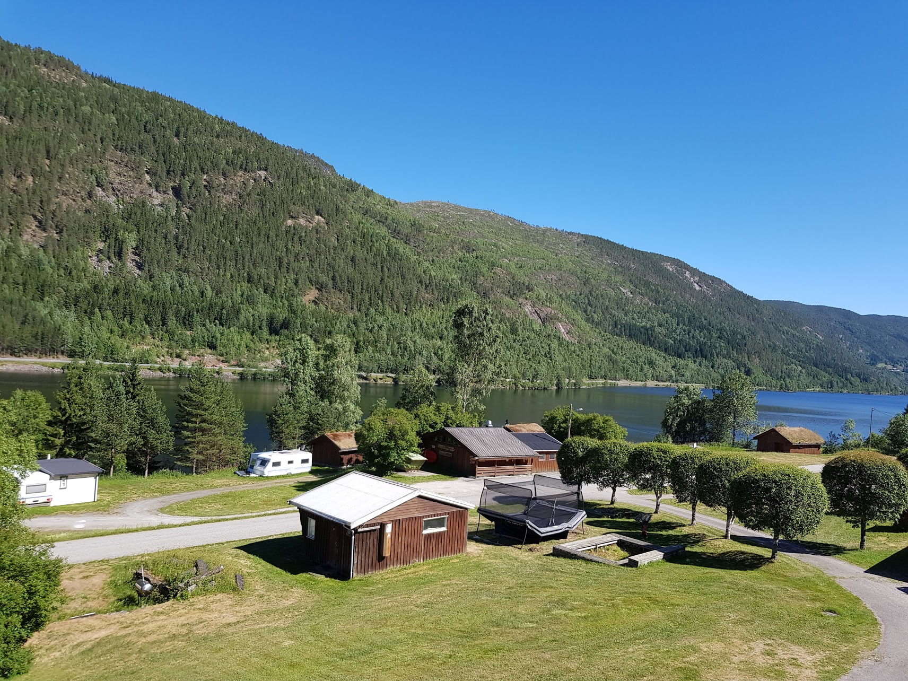

Activités / environs

Rødberg
Fjordgløtt Camping og Hyttesenter se trouve à environ 6 km. au sud de la ville de Rødberg.
Ici vous trouverez des banques, supermarchés, stations-service, garages, bureau de poste, etc.
Langedrag Naturpark
A environ 25 km. du camping se trouve le parc naturel Langedrag.
Dans le parc (visitez égalementhttp://www.langedrag.no),
vous pouvez observer toutes les espèces animales indigènes de la Norvège. Il y a des rennes, des loups,
des loups-cerviers,
des renards de montagne, des chevaux fjords, des sangliers et beaucoup d'autres animaux sauvages.
C'est l'endroit parfait
pour jouir
de la magnifique flore et faune de la Norvège. Vous voulez faire du cheval? Vous pouvez également
le régler à Langedrag!
Nore og Uvdal Bygdetun
Entre Rødberg et Uvdal se trouve, à environ 15 km. du camping,
le Nore og Uvdal Bygdetun. Dans ce jardin, vous pouvez observer plusieurs petits bâtiments
et granges qui à l'origine se trouvaient dans cette région. Le sommet absolu est l'église en
bois debout (" stavkirke ") du 12e siècle, une église originelle en bois, dont il faut absolument
avoir vu l'intérieur!
More information:
Uvdal.no
Dresin in Veggli
Vous aimez faire du vélo et vous voulez essayer quelque chose de nouveau?
Entre Veggli (env. 30 km. au sud de Rødberg) et Rødberg se trouve une ancienne voie ferrée,
qui autrefois faisait partie du Numedalsbanen. Vous pouvez y pédaler en charette (" dresin ")
sur la voie ferrée et faire une jolie excursion vers Rødberg ou descendre tout près du camping.
En cours de route, vous pouvez jouir de la belle nature. N'oubliez pas d'emporter un panier de
pique-nique bien rempli. Vous pouvez réserver le dresin chez nous au camping.
Le rafting
A Dagali, à environ 40 km. au nord du Fjordgløtt Camping og Hytesenter,
on vous offre plusieurs arrangements de rafting. Vous pouvez choisir entre trois tours différents,
à savoir standard, extrême et extrême plus. Il y en a donc pour tous les goûts!
More information:
www.dagaliopplevelser.no/
Le karting et le pilotage automobile
Il est possible de louer des karts, des véhicules tout-terrain et des voitures pour
le pilotage tout près de Dagali Airport, chez Dagali Opplevelser. Pendant toute l'année,
on vous offre des arrangements individuels ou pour groupes. D.O. pourvoit tous les moyens
de sécurité nécessaires et collabore avec des instructeurs certifiés,
qui sont tous actifs dans le sport automobile.
Le Parc naturel Hardangervidda
Si vous conduisez vers le nord sur l'E40, vous arrivez au
Parc naturel Hardangervidda. C'est le plateau de montagne le plus grand de l'Europe
du Nord (3.430 km²). Le sentier Normannsslepa est un très vieux sentier qui va de
l'est à l'ouest du plateau. Au long de ce sentier, on peut retrouver beaucoup de
choses des anciens habitants. Ce parc naturel est le domaine parfait pour se promener,
faire du mountainbike en bien sûr, en hiver, faire du ski ou du ski de fond.
Activités d'hiver
Uvdal Alpinesenter(environ 30 km. de Rødberg).
" Piste plus longue 6 km
" Nombre de routes de ski de fond 3
" Nombre de pistes de ski 8
" Longueur totale pistes de ski 19 km
" Dénivellation 620 mètres
" Piste de luge
" Location de skis et école de ski.
Il y a également des " Alpinesenter " à Dagali et à Geilo. Geilo est une
grande station de sports d'hiver et se trouve à environ 50 minutes en voiture de Rødberg.
En plus, il y a plusieurs routes de ski de fond près de Rødberg, Uvdal et Norefjord,
dont la plupart sont même éclairées!
La pêche
Il y a beaucoup de possibilités pour pêcher dans les environs.
Faites attention : pour pouvoir pêcher, vous devez être en possession d'une carte de pêche
norvégienne (" fiskekort "). Vous pouvez acheter les cartes e.a. au camping.
Vous pouvez aller pêcher le lac Norefjord en bateau : il se trouve juste à côté de notre
camping. Le lac est alimenté par la petite rivière Numedalslågen. Vous pouvez également
pêcher au bord de la rivière. Il y a e.a. des truites et des truites de montagne.
En hiver, c'est aussi très agréable d'aller pêcher sur glace.